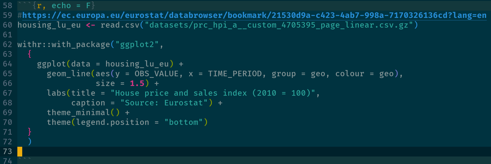
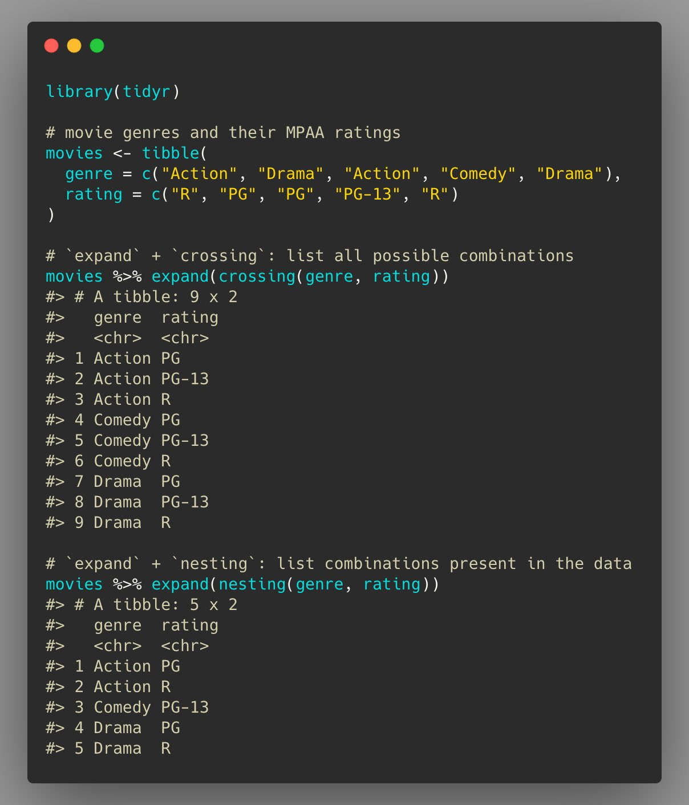
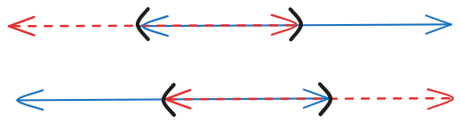
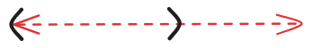

Snippets
Misc
Check whether an environment variable is empty
nzchar(Sys.getenv("blopblopblop")) #> [1] FALSE withr::with_envvar( new = c("blopblopblop" = "bla"), nzchar(Sys.getenv("blopblopblop")) )Use a package for a single instance using {withr::with_package}
- Using library() will keep the package loaded during the whole session, with_package() just runs the code snippet with that package temporarily loaded. This can be useful to avoid namespace collisions for example
Read .csv from a zipped file
# long way tmpf <- tempfile() tmpd <- tempfile() download.file('https://website.org/path/to/file.zip', tmpf) unzip(tmpf, exdir = tmpd) y <- data.table::fread(file.path(tmpd, grep('csv$', unzip(tmpf, list = TRUE)$Name, value = TRUE))) unlink(tmpf) unlink(tmpd) # quick way y <- data.table::fread('curl https://website.org/path/to/file.zip | funzip')Load all R scripts from a directory:
for (file in list.files("R", full.names = TRUE)) source(file)View dataframe in View as html table using {kableExtra}
df_html <- kableExtra::kbl(rbind(head(df, 5), tail(df, 5)), format = "html") print(df_html)
Options
{readr}
options(readr.show_col_types = FALSE)
Cleaning
Remove all objects except:
rm(list=setdiff(ls(), c("train", "validate", "test")))Remove NAs
dataframes
df %>% na.omit df %>% filter(complete.cases(.)) df %>% tidyr::drop_na()variables
df %>% filter(!is.na(x1)) df %>% tidyr::drop_na(x1)
Find duplicate rows
{datawizard} - Extract all duplicates, for visual inspection. Note that it also contains the first occurrence of future duplicates, unlike
duplicatedordplyr::distinct. Also contains an additional column reporting the number of missing values for that row, to help in the decision-making when selecting which duplicates to keep.df1 <- data.frame( id = c(1, 2, 3, 1, 3), year = c(2022, 2022, 2022, 2022, 2000), item1 = c(NA, 1, 1, 2, 3), item2 = c(NA, 1, 1, 2, 3), item3 = c(NA, 1, 1, 2, 3) ) data_duplicated(df1, select = "id") #> Row id year item1 item2 item3 count_na #> 1 1 1 2022 NA NA NA 3 #> 4 4 1 2022 2 2 2 0 #> 3 3 3 2022 1 1 1 0 #> 5 5 3 2000 3 3 3 0 data_duplicated(df1, select = c("id", "year")) #> 1 1 1 2022 NA NA NA 3 #> 4 4 1 2022 2 2 2 0dplyr
dups <- dat %>% group_by(BookingNumber, BookingDate, Charge) %>% filter(n() > 1)base r
df[duplicated(df["ID"], fromLast = F) | duplicated(df["ID"], fromLast = T), ] ## ID value_1 value_2 value_1_2 ## 2 ID-003 6 5 6 5 ## 3 ID-006 1 3 1 3 ## 4 ID-003 1 4 1 4 ## 5 ID-005 5 5 5 5 ## 6 ID-003 2 3 2 3 ## 7 ID-005 2 2 2 2 ## 9 ID-006 7 2 7 2 ## 10 ID-006 2 3 2 3df[duplicated(df["ID"], fromLast = F)doesn’t include the first occurence, so also counting from the opposite direction will include all occurences of the duplicated rows
Remove duplicated rows
{datawizard} - From all rows with at least one duplicated ID, keep only one. Methods for selecting the duplicated row are either the first duplicate, the last duplicate, or the “best” duplicate (default), based on the duplicate with the smallest number of NA. In case of ties, it picks the first duplicate, as it is the one most likely to be valid and authentic, given practice effects.
df1 <- data.frame( id = c(1, 2, 3, 1, 3), item1 = c(NA, 1, 1, 2, 3), item2 = c(NA, 1, 1, 2, 3), item3 = c(NA, 1, 1, 2, 3) ) data_unique(df1, select = "id") #> (2 duplicates removed, with method 'best') #> id item1 item2 item3 #> 1 1 2 2 2 #> 2 2 1 1 1 #> 3 3 1 1 1base R
df[!duplicated(df[c("col1")]), ]dplyr
distinct(df, col1, .keep_all = TRUE)
Showing all combinations present in the data and creating all possible combinations
Fuzzy Join (alt to case_when)
ref.df <- data.frame( bucket = c(“High”, “Medium-High”, “Medium-Low”, “Low”), value.high = c(max(USArrests$Assault), 249, 199, 149), value.low = c(250, 200, 150, min(USArrests$Assault))) USArrests %>% fuzzy_join(ref.df, by = c("Assault"="value.low", "Assault" = 'value.high'), match_fun = c(`>=`,`<=`)) %>% select(-c(value.high, value.low))- Also does partial matches
{kind=link}
{kind=link}
Remove elements of a list by name
purrr::discard_at(my_list, "a") listr::list_remove
Functions
ggplot
viz_monthly <- function(df, y_var, threshhold = NULL) { ggplot(df) + aes( x = .data[["day"]], y = .data[[y_var]] ) + geom_line() + geom_hline(yintercept = threshhold, color = "red", linetype = 2) + scale_x_continuous(breaks = seq(1, 29, by = 7)) + theme_minimal() }- aes is on the outside
- This was a function for a shiny module
- It’s peculier. Necessary for function or module?
- aes is on the outside
Create formula from string
analysis_formula <- 'Days_Attended ~ W + School' estimator_func <- function(data) lm(as.formula(analysis_formula), data = data)Recursive Function
Example
# Replace pkg text with html replace_txt <- function(dat, patterns) { if (length(patterns) == 0) { return(dat) } pattern_str <- patterns[[1]]$pattern_str repl_str <- patterns[[1]]$repl_str replaced_txt <- dat |> str_replace_all(pattern = pattern_str, repl_str) new_patterns <- patterns[-1] replace_txt(replaced_txt, new_patterns) }- Arguments include the dataset and the iterable
- Tests whether function has iterated through pattern list
- Removes 1st element of the list
replace_textcalls itself within the function with the new list and new dataset
Example: Using
RecallandtryCatchload_page_completely <- function(rd) { # load more content even if it throws an error tryCatch({ # call load_more() load_more(rd) # if no error is thrown, call the load_page_completely() function again Recall(rd) }, error = function(e) { # if an error is thrown return nothing / NULL }) }load_moreis a user defined functionRecallis a base R function that calls the same function it’s in.
Calculations
Compute the running maximum per group
(df <- structure(list(var = c(5L, 2L, 3L, 4L, 0L, 3L, 6L, 4L, 8L, 4L), group = structure(c(1L, 1L, 1L, 1L, 1L, 2L, 2L, 2L, 2L, 2L), .Label = c("a", "b"), class = "factor"), time = c(1L, 2L, 3L, 4L, 5L, 1L, 2L, 3L, 4L, 5L)), .Names = c("var", "group","time"), class = "data.frame", row.names = c(NA, -10L))) df[order(df$group, df$time),] # var group time # 1 5 a 1 # 2 2 a 2 # 3 3 a 3 # 4 4 a 4 # 5 0 a 5 # 6 3 b 1 # 7 6 b 2 # 8 4 b 3 # 9 8 b 4 # 10 4 b 5 df$curMax <- ave(df$var, df$group, FUN=cummax) df var | group | time | curMax 5 a 1 5 2 a 2 5 3 a 3 5 4 a 4 5 0 a 5 5 3 b 1 3 6 b 2 6 4 b 3 6 8 b 4 8 4 b 5 8
Time Series
Base-R
- Intervals
Difference between dates
# Sample dates start_date <- as.Date("2022-01-15") end_date <- as.Date("2023-07-20") # Calculate time difference in days time_diff_days <- end_date - start_date # Convert days to months months_diff_base <- as.numeric(time_diff_days) / 30.44 # average days in a month cat("Number of months using base R:", round(months_diff_base, 2), "\n") #> Number of months using base R: 18.1
{lubridate}
Intervals
Lubridate’s interval functions
Notes from: Wrangling interval data using lubridate
Difference between dates
# Load the lubridate package library(lubridate) # Sample dates start_date <- ymd("2022-01-15") end_date <- ymd("2023-07-20") # Calculate months difference using lubridate months_diff_lubridate <- interval(start_date, end_date) %/% months(1) cat("Number of months using lubridate:", months_diff_lubridate, "\n") #> Number of months using lubridate: 18%/%is used for floor division by months. For decimals, just use/
Data
(house_df <- tibble( person_id = factor(c("A10232", "A10232", "A10232", "A39211", "A39211", "A28183", "A28183", "A10124")), house_id = factor(c("H1200E", "H1243D", "H3432B", "HA7382", "H53621", "HC39EF", "HA3A01", "H222BA")), start_date = ymd(c("20200101", "20200112", "20211120", "19800101", "19900101", "20170303", "20190202", "19931023")), end_date = ymd(c("20200112", "20211120", "20230720", "19891231", "20170102", "20180720", "20230720", "20230720")) )) #> A tibble: 8 × 4 #> person_id house_id start_date end_date #> <fct> <fct> <date> <date> #> 1 A10232 H1200E 2020-01-01 2020-01-12 #> 2 A10232 H1243D 2020-01-12 2021-11-20 #> 3 A10232 H3432B 2021-11-20 2023-07-20 #> 4 A39211 HA7382 1980-01-01 1989-12-31 #> 5 A39211 H53621 1990-01-01 2017-01-02 #> 6 A28183 HC39EF 2017-03-03 2018-07-20 #> 7 A28183 HA3A01 2019-02-02 2023-07-20 #> 8 A10124 H222BA 1993-10-23 2023-07-20Create interval column
house_df <- house_df |> mutate( # create the interval int = interval(start_date, end_date), # drop the start/end columns .keep = "unused" ) house_df #> A tibble: 8 × 3 #> person_id house_id int #> <fct> <fct> <Interval> #> 1 A10232 H1200E 2020-01-01 UTC--2020-01-12 UTC #> 2 A10232 H1243D 2020-01-12 UTC--2021-11-20 UTC #> 3 A10232 H3432B 2021-11-20 UTC--2023-07-20 UTC #> 4 A39211 HA7382 1980-01-01 UTC--1989-12-31 UTC #> 5 A39211 H53621 1990-01-01 UTC--2017-01-02 UTC #> 6 A28183 HC39EF 2017-03-03 UTC--2018-07-20 UTC #> 7 A28183 HA3A01 2019-02-02 UTC--2023-07-20 UTC #> 8 A10124 H222BA 1993-10-23 UTC--2023-07-20 UTCIntersection Function
int_intersect <- function(int, int_limits) { int_start(int) <- pmax(int_start(int), int_start(int_limits)) int_end(int) <- pmin(int_end(int), int_end(int_limits)) return(int) }- The red dashed line is the reference interval and the blue solid line is the interval of interest
- The function creates an interval thats the intersection of both intervals (segment between black parentheses)
Proportion of the Reference Interval
int_proportion <- function(dat, reference_interval) { # start with the housing data dat |> # only retain overlapping rows, this makes the following # operations more efficient by only computing what we need filter(int_overlaps(int, reference_interval)) |> # then, actually compute the overlap of the intervals mutate( # use our earlier truncate function int_sect = int_intersect(int, reference_interval), # then, it's simple to compute the overlap proportion prop = int_length(int_sect) / int_length(reference_interval) ) |> # combine different intervals per person summarize(prop_in_nl = sum(prop), .by = person_id) }Example
int_2017 <- interval(ymd("20170101"), ymd("20171231")) prop_2017 <- int_proportion(dat = house_df, reference_interval = int_2017) prop_2017 #> # A tibble: 3 × 2 #> person_id prop_in_nl #> <fct> <dbl> #> 1 A39211 0.00275 #> 2 A28183 0.832 #> 3 A10124 1
{kind=link}
{kind=link}